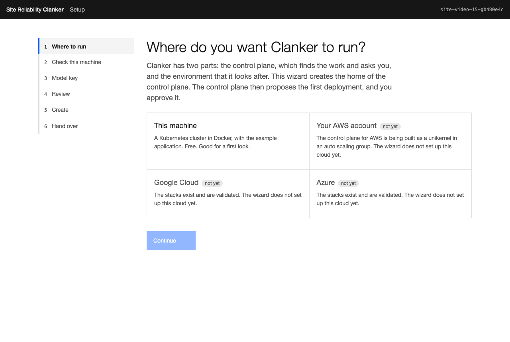
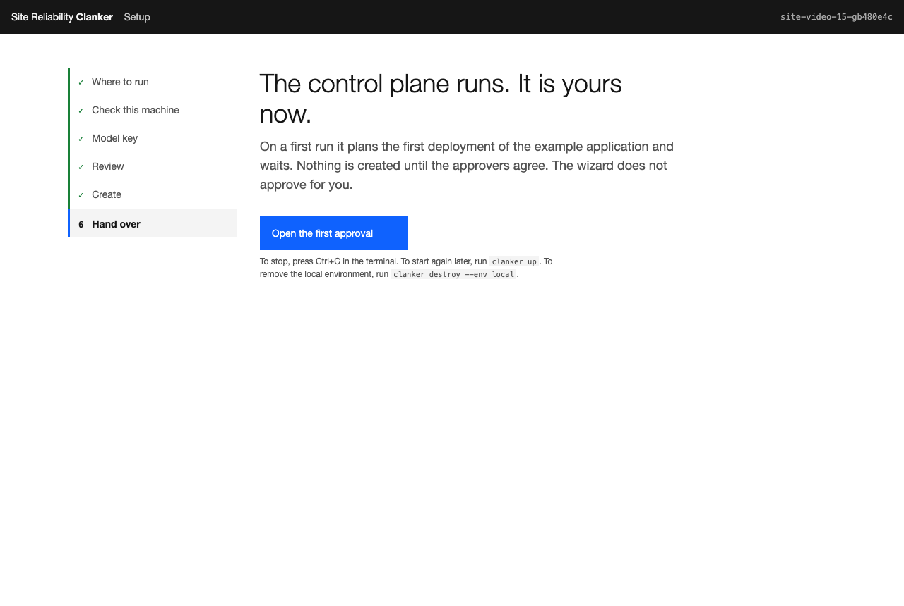

-
1
Download the setup app
Screenshot of the wizard
-
2
Sign in to your cloud
Drawing. AWS: in progress
-
3
Start the control plane
Screenshot of the wizard
-
4
Deploy the product
Records of the first run
-
5
Maintain it
Records of one month
The setup app is one self-contained file.
$ clanker setup
The command opens a wizard in your browser, on your own machine.

AWS: in progress
You sign in with your own cloud account.
This is a drawing of the design, not a recording. The code for these steps has tests. It has not run in an AWS account.
1
Sign in with the AWS CLI
2
Review the CloudFormation change set
3
Put the model key in Parameter Store
Today the wizard sets up the local target only.
The wizard starts the control plane, then hands it over.
The control plane plans the first deployment and waits.
The wizard does not approve for you.

Six layers, one after the other. Each layer has its own grant.
Then it keeps the product up to date.
Each one is a work item, with the same checkpoints.